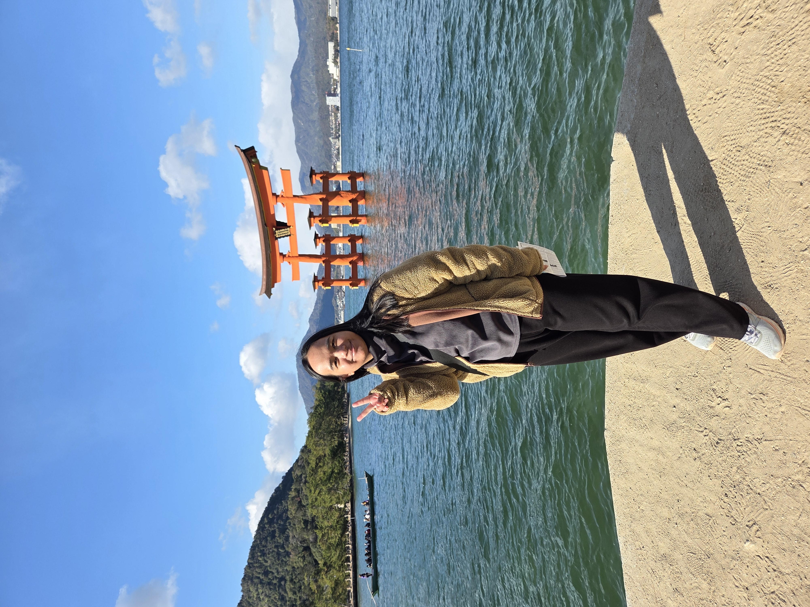
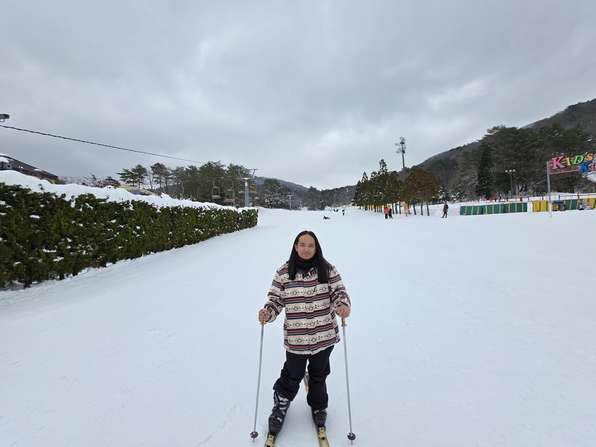
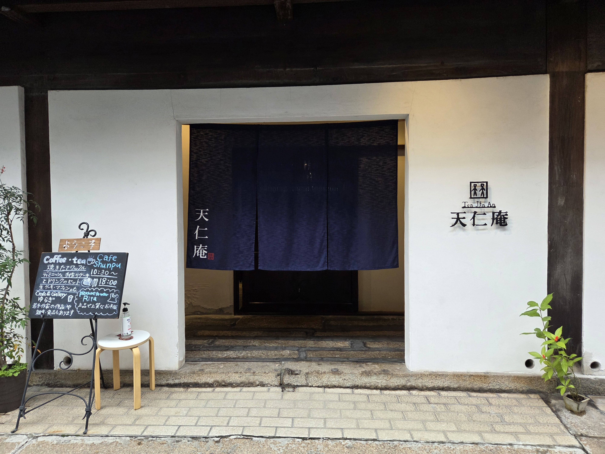
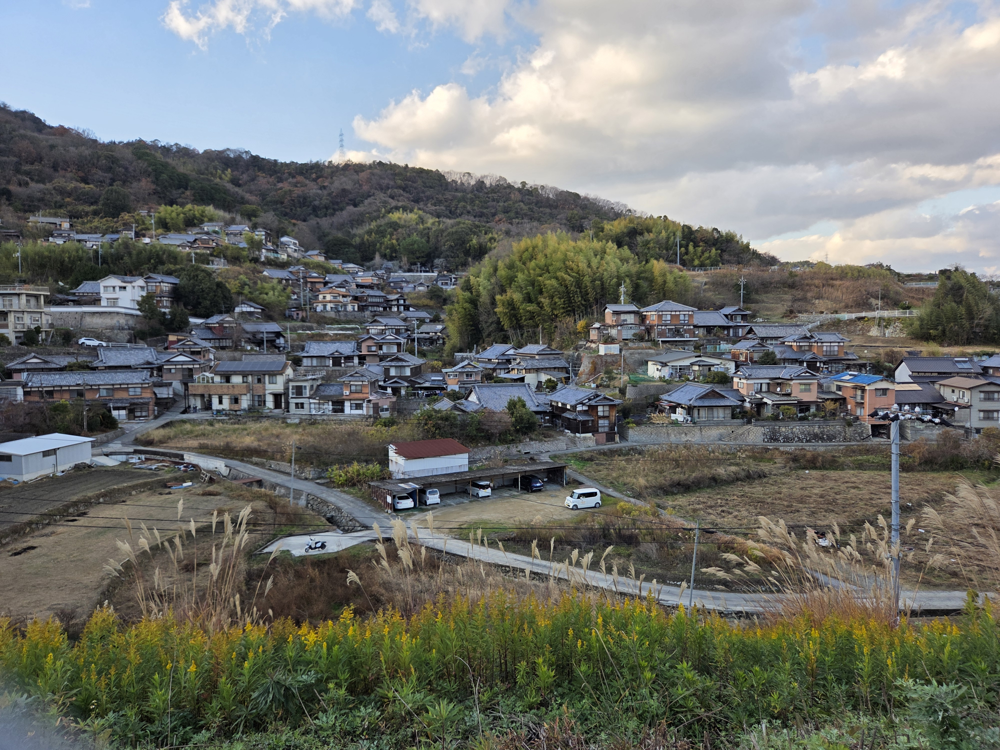
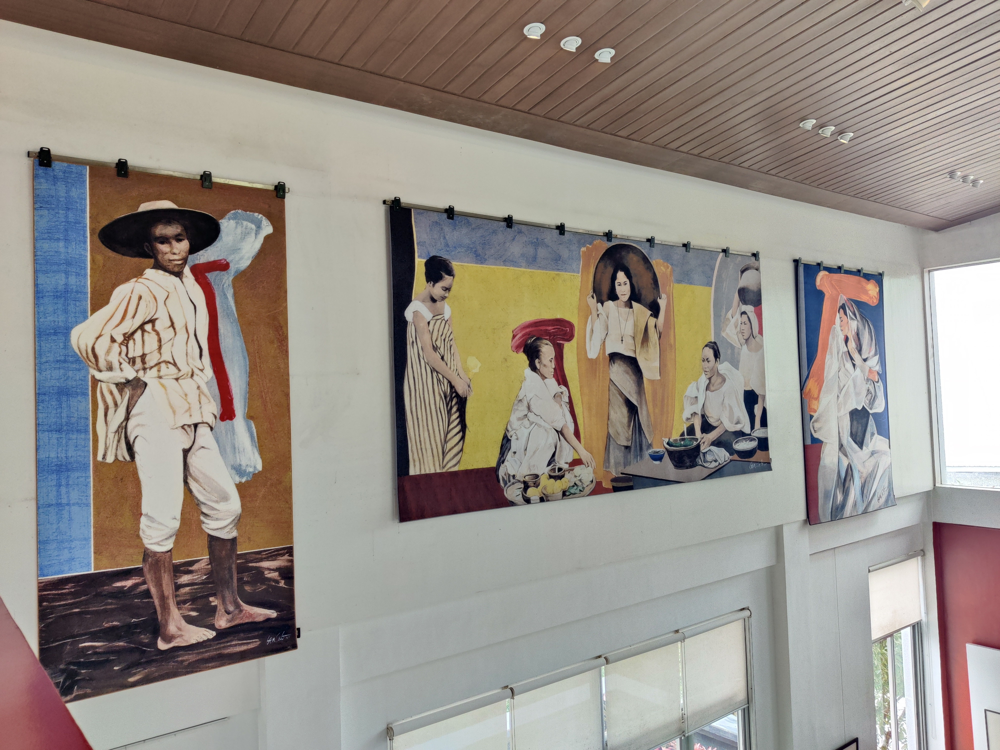
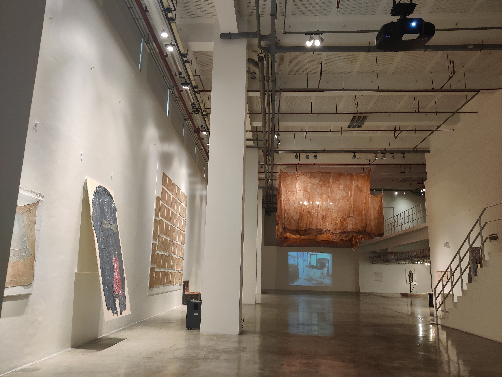
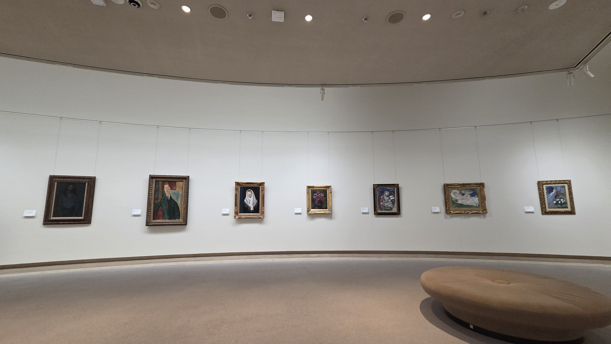

Hello! My name is Ellen Dee Dego, currently taking the Diploma in Computer Science at the University of the Philippines - Open University. Prior, I attended the University of the Philippines - Baguio where I took up a Bachelor of Arts in Communication degree. During my last year in undergrad, I realized a new interest in coding, and I've been slowly learning it since.
I love music! It has been a constant in my life. I have a particular way of listening to music, where I often stick to a genre, an artist (or group of artists), and listen to them constantly. Then I move on to the next. This way, although unintended, the songs also began to hold memories of phases in my life when I listened to them. Recently, I've started to realize that I actually listen to a variety of songs. Here's a playlist I made to showcase some songs I've immensely enjoyed throughout recent years. I hope you enjoy!



My parents have worked in Japan all my life. We were also blessed to have gone there multiple times. Naturally, my interest in Japan grew. It extended to me wanting to learn the language. The photos above are from our most recent Japan trip in December 2025.
I really like art and culture. Whenever I can, I make it a point to visit museums, particularly art museums. I live near Baguio, and though there is an evident art scene, there are not a lot of museums around. I've visited all the museums here at least twice now. Here are a few photos from some museums I've been to.

BenCab Museum in Baguio

Museum of Contemporary Art and Design in Manila

Hiroshima Museum of Art in Japan
Thanks for reading through my page! Click the button below for a fun fact: